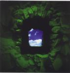

| Artist: | IQ |
| Title: | Subterranea The Concert |
| Label: | Giant Electric Pea GEPCD 1027 |
| Length(s): | 101 minutes |
| Year(s) of release: | 2000 |
| Month of review: | 10/2000 |
| 1) | Overture | 4.34 |
| 2) | Provider | 1.36 |
| 3) | Subterranea | 5.29 |
| 4) | Sleepless Incidental | 6.04 |
| 5) | Failsafe | 8.37 |
| 6) | Speak My Name | 3.37 |
| 7) | Tunnel Vision | 7.17 |
| 8) | Infernal Chorus | 4.38 |
| 9) | King Of Fools | 2.15 |
| 10) | The Sense In Sanity | 4.38 |
| 11) | State Of Mine | 2.29 |
Disc 2:
| 1) | Laid low | 1.35 |
| 2) | Breathtaker | 5.26 |
| 3) | Capricorn | 5.36 |
| 4) | The other side | 2.32 |
| 6) | Somewhere in time | 6.38 |
| 7) | High waters | 2.47 |
| 8) | The narrow margin | 20.00 |